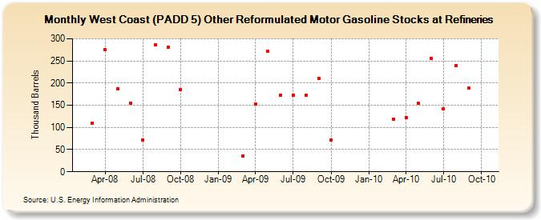

|
|||||
|  | |||||
| West Coast (PADD 5) Other Reformulated Motor Gasoline Stocks at Refineries (Thousand Barrels) | |||||
| Year | Jan | Feb | Mar | Apr | May | Jun | Jul | Aug | Sep | Oct | Nov | Dec |
|---|---|---|---|---|---|---|---|---|---|---|---|---|
| 2008 | 110 | 276 | 187 | 155 | 72 | 286 | 281 | 186 | ||||
| 2009 | 36 | 153 | 271 | 173 | 173 | 173 | 211 | 72 | ||||
| 2010 | 118 | 122 | 154 | 256 | 142 | 240 | 188 | |||||
| - = No Data Reported; -- = Not Applicable; NA = Not Available; W = Withheld to avoid disclosure of individual company data. |
| Release Date: 1/31/2017 |
| Next Release Date: 2/28/2017 |